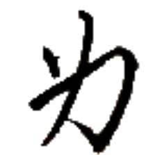
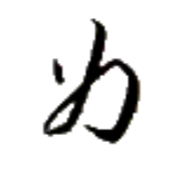
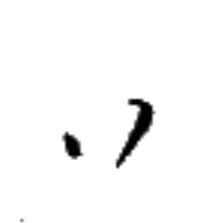
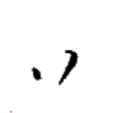
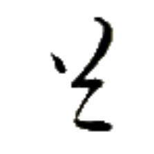
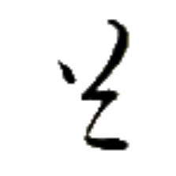
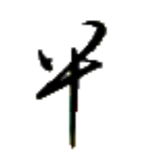
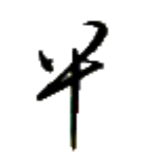

再言 ティュ·チェㇷ゚→ 【再言】
[動詞] もう一度言う
[間投詞] もう一度言ってください
再行 ティュ·モㇰ→ 【再行】
[動詞] 再開する、再び行う
[動詞] (セッカイクで) 季【季】を続行する
[間投詞] (セッカイクで) 季【季】を続行
在手 アイㇺ⤴ホㇷ゚→ 【在手】
[状態動詞] 持っている
[節要求動詞] ～したことがある

エゥㇺ· 【如】
[状態動詞] ～のような様子・状態である、まるで～のようである
[前置詞] ～のような様子・状態で、まるで～のように
[副詞] どうやら～のように思える
如何 エゥㇺ·ナン⤴ 【如何】
[状態動詞] どのようである
[副詞] どのような様子・状態・方法で
光島 アイㇰ⤴ドㇷ゚→ 【光島】
[名詞] アイキト島（アイル共和国を構成する島の一つ）
光龍卵 アイㇰ⤴ホゥイ⤴ウェゥㇳ· 【光龍卵】
[名詞] 光る龍の卵、読心の光龍卵
羅古論【羅古論】の説話大遠小周【大遠小周】に登場する、食べることによって人の心が読めるようになるとされる龍の卵。実在しない。
冠光 アイ⤴アイㇰ⤴ 【冠光】
[名詞] 王冠の光、統治者・統治機構の権力が世を照らす様
アイル共和国国歌の題名でもある。
端心 タウ⤴ヒアー→ 【端心】
[名詞] 極端な理想、絵空事
極端であるがゆえに視野が狭まっていることを含意する。
 

 


 
